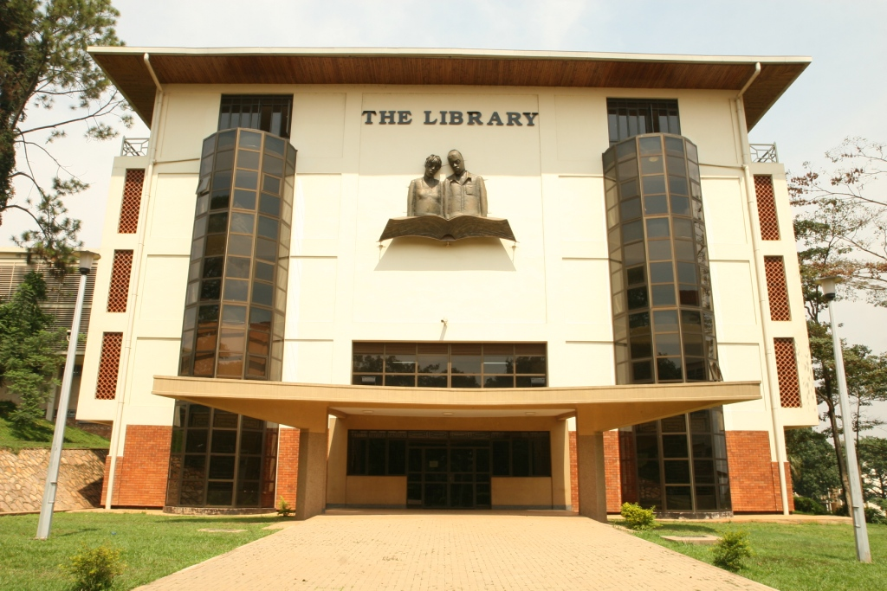

This program is to guide and orient you through your time here at makerere and mainly in the usage of library services.
Makerere University is comprised of 10 colleges and each college has a college library which serves under the supervision of the main library. these libraries provide students with all the information anad resources they require to attain the knowlege that enables them archieve their goals in the education sectorEach of these colleges has schools that serve under it.The colleges in makerere include the following;
The uniersity librarian is in charge of the activities done in all libraries at every college,all policies at these librariesand the guidelones that followed in the usage of each and every library at the university campus.All other librarains that is to say the college librarians follow guidelines drafted by the univeristy library's librarian. The college librarians have resources that to all subjects and courses offered at the university which can be of good srvice for you freshmen.
Makerere library service comprises of the main library and eleven branch libraries. Nine of these are located at the main campus and two off campus namely ALBERT COOK medical library in mulago and MUARIK(library at the agricultural institute in kabanyolo)